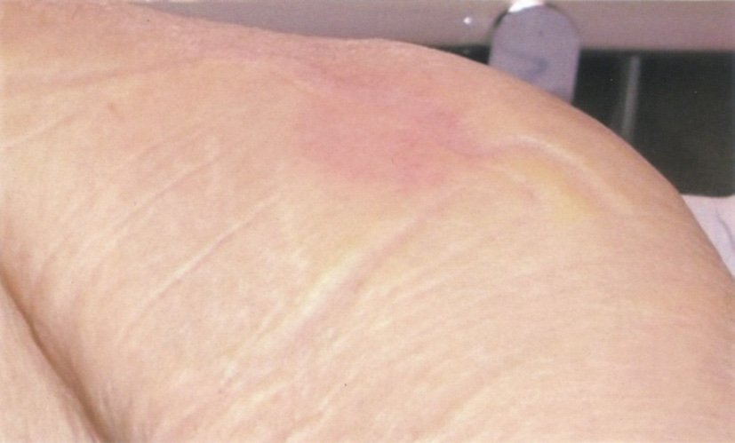

| 1型DM | 2型DM | |
|---|---|---|
| 1型DM | 2型DM | |
| 発症年齢 | 若年（20歳代）多い | 中高年が多い |
| 発症様式 | 急激・劇症 | 緩慢 |
| 体型 | やせ型 | 肥満型が多い |
| ケトーシス | 起こりやすい | まれ |
| インスリン分泌 | 絶対的欠乏 | 相対的低下 |
| GAD抗体 | 陽性 | 陰性 |
| 治療 | インスリン必須 | 生活習慣改善→薬物 |
| ホルモン | 産生部位 | 血糖への作用 |
|---|---|---|
| ホルモン | 産生部位 | 血糖への作用 |
| インスリン | 膵β細胞 | 低下（グルコース取り込み・糖新生抑制） |
| GLP-1・GIP | 腸管（L/K細胞） | ↓（インスリン分泌促進、血糖依存性） |
| グルカゴン | 膵α細胞 | 上昇（肝糖放出） |
| コルチゾール | 副腎皮質 | 上昇（糖新生促進） |
| GH | 下垂体前葉 | 上昇（インスリン抵抗性↑） |
| アドレナリン | 副腎髄質 | 上昇（β2→肝糖放出） |
| 原因 | 血糖 | 特徴 |
|---|---|---|
| 原因 | 血糖 | 特徴 |
| 糖尿病 | 高値 | HbA1c↑・診断基準満たす |
| 腎性糖尿 | 正常 | SGLT2変異等→腎糖排泄閾値↓ |
| 妊娠 | 正常〜軽度上昇 | 妊娠中→腎血流↑→閾値↓ |
| Fanconi症候群 | 正常 | アミノ酸尿・尿酸尿も |
| 種類 | 特徴 | 症状 |
|---|---|---|
| 種類 | 特徴 | 症状 |
| 遠位対称性多発神経障害 | 最多・両側性 | 足先の感覚障害・振動覚↓・アキレス腱反射消失 |
| 自律神経障害 | 起立性低血圧・便秘・下痢・勃起障害 | こむら返り・めまい |
| 単神経障害 | 動眼神経・外転神経麻痺 | 複視・眼瞼下垂（片側性） |
| 糖尿病性筋萎縮症 | 腰部神経叢障害 | 大腿筋萎縮・疼痛 |
| 薬剤 | 作用部位 | 機序 |
|---|---|---|
| 薬剤 | 作用部位 | 機序 |
| SGLT2阻害薬 | 近位尿細管 | グルコース再吸収↓ |
| ループ利尿薬（フロセミド） | Henle TAL（上行脚） | NKCC2阻害 |
| サイアザイド系利尿薬 | 遠位尿細管 | NCC阻害 |
| スピロノラクトン（抗ALD） | 集合管・遠位尿細管 | アルドステロン受容体阻害 |
| AVP-V2拮抗薬（トルバプタン） | 集合管 | AQP2発現抑制→水利尿 |
| 状況 | 診断 |
|---|---|
| 状況 | 診断 |
| 空腹時血糖≥126 OR 随時血糖≥200 OR 75gOGTT2h値≥200 | 糖尿病型（1つ） |
| 糖尿病型+HbA1c≥6.5%（同日） | 確定診断 |
| 糖尿病型+典型症状（口渇・多飲・多尿・体重減少） | 確定診断 |
| HbA1c≥6.5%のみ（血糖正常） | 確定診断不可（血糖検査が必要） |
| 別日に2回糖尿病型 | 確定診断 |
| 栄養素 | 推奨範囲 | 備考 |
|---|---|---|
| 栄養素 | 推奨範囲 | 備考 |
| 炭水化物 | 50〜60% | 食物繊維を多く |
| 脂質 | 20〜30% | 飽和脂肪酸<7% |
| 蛋白質 | 15〜20%（または1.0〜1.2g/IBW kg） | 腎症合併時は制限 |
| 食塩 | <6g/日 | 高血圧合併時はより厳格 |
| 総エネルギー | 標準体重×25〜30kcal | 軽労作の場合 |
| 表 | 食品例 | 1単位量（80kcal） |
|---|---|---|
| 表 | 食品例 | 1単位量（80kcal） |
| 表1（穀類） | ご飯 | 50g（軽くよそった3/4膳） |
| 表3（魚・肉・卵・大豆） | 鶏卵 | 1個（50g） |
| 表4（牛乳・乳製品） | 牛乳 | 120mL |
| 表5（油脂） | 植物油 | 10g |
| DKA | HHS | |
|---|---|---|
| DKA | HHS | |
| 主な型 | 1型DM | 2型DM（高齢者） |
| 血糖 | >250mg/dL | >600mg/dL |
| 血清浸透圧 | 正常〜軽度↑ | >320mOsm/L |
| ケトン体 | 陽性（強陽性） | なし〜わずか |
| アシドーシス | 著明（pH<7.3） | 軽微 |
| 脱水 | 中等度 | 高度（眼球陥凹） |
| Kussmaul呼吸 | あり | なし |
| 因子 | 計算 | 今回の値 |
|---|---|---|
| 因子 | 計算 | 今回の値 |
| Na（主要因子） | ×2（Na+とAnion） | 148×2 = 296 |
| 血糖 | ÷18（mg/dL→mmol/L） | 630÷18 = 35 |
| BUN | ÷2.8（mg/dL→mmol/L） | 28÷2.8 = 10 |
| 合計 | 341 mOsm/L |
| 段階 | 輸液 | その他 |
|---|---|---|
| 段階 | 輸液 | その他 |
| 初期（〜1時間） | 0.9% NS 1〜2L | 血糖・電解質確認 |
| 続き | 0.9% NS + K補充 | インスリン持続静注（0.1単位/kg/h） |
| 血糖250〜300mg/dL | 5%ブドウ糖含液 | インスリン継続（DKA解消確認） |
| DKA解消（pH>7.3・bicarbonate>15） | 経口摂取再開 | 皮下インスリンへ移行 |
| 薬剤 | 低血糖リスク | 機序 |
|---|---|---|
| 薬剤 | 低血糖リスク | 機序 |
| SU薬（グリベンクラミド等） | 高い★ | 血糖非依存性インスリン分泌↑ |
| グリニド（速効型インスリン分泌促進） | 中等度 | 食後の一時的インスリン↑ |
| DPP-4阻害薬 | 低い | 血糖依存性インスリン↑ |
| SGLT2阻害薬 | 低い | グルコース排泄↑（非インスリン依存） |
| ビグアナイド | 低い | インスリン感受性↑（分泌促進なし) |
| αGI | 低い | 吸収遅延のみ |
| ソモギー効果 | 暁現象 | |
|---|---|---|
| ソモギー効果 | 暁現象（dawn phenomenon） | |
| 機序 | 夜間低血糖→反跳性高血糖 | 早朝のGH↑→インスリン抵抗性↑ |
| 午前2〜3時の血糖 | <70（低値） | 正常〜高値 |
| 早朝血糖 | 高値 | 高値 |
| 対応 | 就寝前インスリン減量 | 就寝前インスリン増量 |
| 確認法 | 夜間血糖測定 | CGMで確認 |
| OGTT | 尿糖 | 診断 | 対応 |
|---|---|---|---|
| OGTT | 尿糖 | 診断 | 対応 |
| 異常（糖尿病型） | 陽性 | 糖尿病 | 治療開始 |
| 異常（境界型） | 陽性 | 耐糖能異常 | 生活指導・経過観察 |
| 正常型 | 陽性 | 腎性糖尿 | 対応不要 |
| 正常型 | 陰性 | 正常 | 対応不要 |
| ステージ | 蛋白尿 | エネルギー | 蛋白制限 | 塩分 |
|---|---|---|---|---|
| ステージ | 蛋白尿 | エネルギー | 蛋白制限 | 塩分 |
| 第1期（正常） | 正常 | 25〜30kcal/IBWkg | 制限なし | <6g |
| 第2期（微量蛋白尿） | 微量 | 25〜30 | 制限なし | <6g |
| 第3期（顕性腎症） | 蛋白尿陽性 | 25〜30 | 0.8〜1.0g/IBWkg | <6g |
| 第4期（腎不全） | 蛋白尿 | 25〜35 | 0.6〜0.8g/IBWkg | <3g |
| 第5期（透析） | — | 30〜35（血液透析） | 0.9〜1.2g/IBWkg | <6g |
| 臓器 | 症状 |
|---|---|
| 臓器 | 症状 |
| 心臓 | 起立性低血圧・安静時頻脈・無痛性心筋梗塞 |
| 消化管 | 便秘・下痢（夜間）・胃排泄遅延（gastroparesis） |
| 泌尿器 | 神経因性膀胱・勃起障害 |
| 汗腺 | 発汗異常（多汗・無汗） |
| 低血糖感知能低下 | 無自覚性低血糖（交感神経症状なし） |
| 種類 | 尿浸透圧 | 代表疾患 |
|---|---|---|
| 種類 | 尿浸透圧 | 代表疾患 |
| 浸透圧利尿 | 高（尿中溶質↑） | 高血糖（DM）・マンニトール |
| 希釈利尿（水利尿） | 低（希薄な尿） | 中枢/腎性尿崩症・心因性多飲 |
| 過剰飲水 | 低 | 心因性多飲 |
| 利尿薬 | 状況により | ループ利尿薬・サイアザイド |
| 皮膚病変 | 特徴 |
|---|---|
| 皮膚病変 | 特徴 |
| 浮腫性硬化症 | 項〜背部の皮膚硬化・肥厚（長期2型DM） |
| 環状肉芽腫 | 環状紅斑→一部DMに関連 |
| 壊疽性足病変 | 末梢神経障害＋血行障害→潰瘍・壊疽 |
| Dupuytren拘縮 | 手掌腱膜線維化（DM・アルコール） |
| 皮膚掻痒症 | 高血糖による代謝異常 |
| 作用 | 機序 | 結果 |
|---|---|---|
| 作用 | 機序 | 結果 |
| 血糖↓ | グルコース取り込み↑・糖新生↓ | DM治療の基本 |
| K↓ | Na-K-ATPase活性化 | DKA治療でK補充必要 |
| ケトン体↓ | 脂肪分解抑制 | DKA治療の機序 |
| TG↓ | LPL活性化・VLDL分解↑ | 高TG血症改善 |
| 尿酸↑ | 腎再吸収↑ | 痛風に注意（SGLT2iは逆に↓） |

| グループ | スコア | 状態 |
|---|---|---|
| グループ | スコア | 状態 |
| Ⅰ（覚醒） | 1 | 時・場所・人物の見当識障害 |
| Ⅰ（覚醒） | 2 | 日時・場所が分からない |
| Ⅰ（覚醒） | 3 | 自分の名前・生年月日が分からない |
| Ⅱ（刺激で覚醒） | 10 | 呼びかけで開眼 |
| Ⅱ（刺激で覚醒） | 20 | 大声・揺さぶりで開眼 |
| Ⅱ（刺激で覚醒） | 30 | 繰り返し刺激でかろうじて開眼 |
| Ⅲ（刺激でも覚醒なし） | 100 | 痛みに手足動かす |
| Ⅲ（刺激でも覚醒なし） | 200 | 痛みに手足動かし顔しかめる |
| Ⅲ（刺激でも覚醒なし） | 300 | 痛みに反応なし |
| 受容体タイプ | ホルモン例 | 特徴 |
|---|---|---|
| 受容体タイプ | ホルモン例 | 特徴 |
| 細胞膜受容体 | インスリン・成長ホルモン・サイトカイン | チロシンキナーゼ型/Gタンパク質共役型 |
| 細胞質内受容体 | ステロイドホルモン（アルドステロン・コルチゾール・テストステロン） | 核に移行→転写制御 |
| 核内受容体 | 甲状腺ホルモン（T3・T4）・VitD・レチノイン酸 | 直接核内に作用 |
| 種類 | 症状 | 血糖目安 |
|---|---|---|
| 種類 | 症状 | 血糖目安 |
| 交感神経症状（先行） | 振戦・発汗・動悸・顔面蒼白・口渇・不安 | <70mg/dL |
| 神経糖欠乏症状（重症） | 頭痛・集中力低下・意識障害・けいれん・昏睡 | <50mg/dL |
| 時間 | 確認・治療 |
|---|---|
| 時間 | 確認・治療 |
| 即座（0分） | 血糖測定・血清K確認・動脈血ガス・血ガス |
| 0〜30分 | 0.9%NS 1〜2L/h（輸液開始） |
| 循環回復後 | インスリン持続静注（0.1U/kg/h）＋K補充開始 |
| 血糖<250 | 5%ブドウ糖液に変更（インスリン継続） |
| DKA解消後 | インスリン皮下注へ移行 |